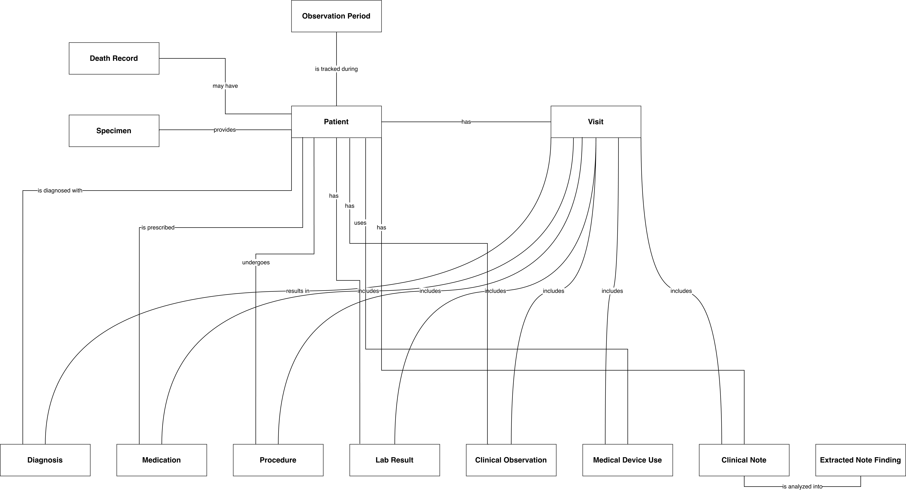
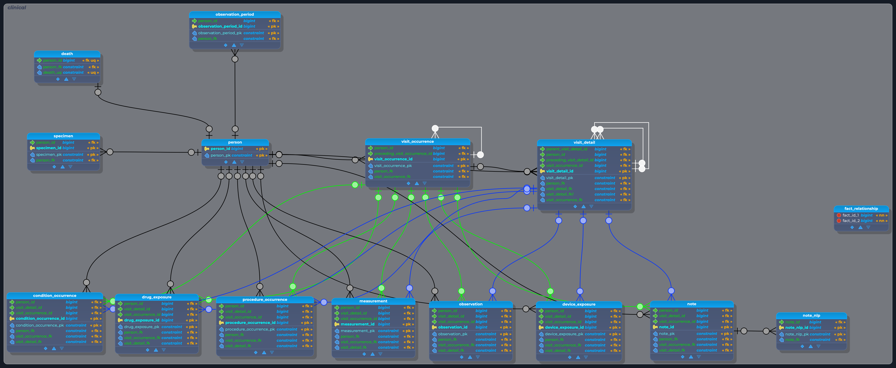

One healthcare domain, modeled at 3 levels of abstraction.
A walkthrough of data modeling at three levels of abstraction — conceptual → logical → physical — applied to the OMOP Common Data Model (v5.4), the international standard for observational healthcare data.
Most data modeling portfolios show one diagram. This one deliberately shows the same domain three times, at three levels of detail, because the transitions between levels — what gets simplified, what gets kept, and why — are where the actual design judgment lives.

Level 1Conceptual
Plain-language entities and verb-phrase relationships. No keys, no types — the "what happens to a patient" story.

Level 2Logical
Entities, primary keys, and foreign keys — the relationship structure, with every non-key attribute stripped out.
 Level 3
Level 3
Physical
The implementation-ready schema: every column, data type, and constraint across all four OMOP schemas.